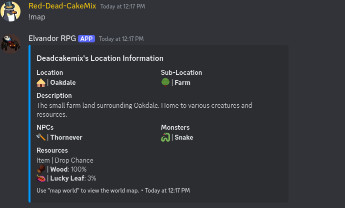
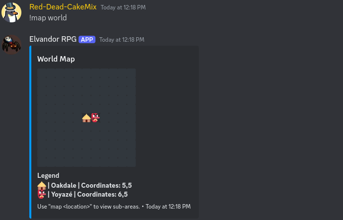

Devlog 001 - Elvandor
By Jacob | August 9, 2024
Introduction
Recently, I’ve begun to develop a custom MMORPG Discord bot with my good friend Rairb. The bot is titled “Elvandor RPG.” For those of you who are unaware, a Discord bot allows users to type commands to do various things, from moderation to funny little games. In my case, these commands allow users to fight monsters, explore dungeons, gather loot, talk to NPCs, etc. The idea is inspired by a preexisting popular RPG Discord bot known as EpicRPG, which is a very simple RPG. The plan is to create an experience with the same basic premise but much more complicated in terms of gameplay and mechanics, targeted towards a more technical and grindy audience.
Current Commands
Below is a list of all current commands:
- ^ denotes a command that will be elaborated on later
- !badges - Manage and view your badges
- !battle - Engage in a turn-based battle with a monster
- !buy - Buy various items
- !chop - Chop wood to gather resources
- !help - Displays all available commands
- !interact - Interact with nearby NPCs
- !inventory - View your inventory
- !item - Get information about a specific item or weapon
- !leaderboard - See how you rank compared to other players
- !leave - Leave the shop you are in. This is helpful if the bot is shut down while you are in the shop
- !log - Debug command to view file content in an embed
- ^ !map - Display detailed location information or a map of the current location or the world
- !mine - Mine ore to gather resources
- !npc - Get information about a specific NPC
- ^ !profile - View character profile
- !sell - Sell various items
- !start - Create a new character
- !travel - Move to a new location
That looks like a good bit, but most of it is under development or we’re still working out the kinks. Besides the point, let's look at some of the more interesting commands in more detail.
Map Command
The map command is very interesting in my opinion. It has two “variants”:
- !map - Shows loads of information regarding your current location in the world of Elvandor. 
- !map world - Shows the major locations you can travel to. As of now, there are only two, each containing many sub-locations. 
On the more technical side of things, the commands take info from a JSON file that stores the data for the locations:
{
"5,5": {
"name": "Oakdale",
"description": "A large town in the middle of the Elvandor Forest. It's a nice place to live and work.",
"emoji": ":hut:",
"coordinates": "5,5",
"subLocations": {
"1": {
"name": "Farm",
"description": "The small farmland surrounding Oakdale. Home to various creatures and resources.",
"coordinates": "5,5.1",
"monsters": ["4000001"],
"drops": [
{
"0000001": {
"dropchance": 100
},
"0000002": {
"dropchance": 3
},
"0000003": {
"dropchance": 0.1
}
}
],
"emoji": ":deciduous_tree:"
},
"2": {
"name": "Mines",
"description": "Mines located beneath Oakdale. Rich in minerals and ores.",
"coordinates": "5,5.2",
"monsters": ["4000001"],
"drops": [
{
"0000010": {
"dropchance": 100
},
"0000011": {
"dropchance": 5
}
}
],
"emoji": ":pick:"
}
}
},
"6,5": {
"name": "Yoyazé",
"description": "A small town fallen from grace. Formerly a tourist destination, it now reigns under the control of the corrupted Yoyazé Empire.",
"emoji": ":japanese_goblin:",
"coordinates": "6,5",
"subLocations": {
"1": {
"name": "Yoyazé City",
"description": "The Yoyazé Empire's main area. It's a place of great power and influence.",
"coordinates": "6,5.1",
"monsters": ["4000001"],
"drops": [],
"emoji": ":japanese_goblin:"
},
"2": {
"name": "Yoyazé Forest",
"description": "A dense forest that surrounds Yoyazé. It's a place of great danger.",
"coordinates": "6,5.2",
"monsters": ["4000001"],
"drops": [],
"emoji": ":evergreen_tree:"
}
}
}
}
Profile Command
A rather simple command, but it shows the basic stats for your character, which is a fundamental mechanism.
Just like the map command, it gets the data from a JSON file. Coders among you may be frustrated that I'm not using a database, but rest assured it's temporary. Each player has their own file with their data. Here is my current JSON file for reference:
{
"health": 100,
"strength": 13,
"morality": 50,
"intelligence": 10,
"agility": 10,
"mana": 0,
"location": "5,5.1",
"badges": [
"900000001",
"900000002",
"900000003",
"900000004",
"900000005",
"900000006"
],
"inventory": [
{
"0000001": {
"quantity": 31
}
}
],
"equipped": [
{
"axe": 10000001
},
{
"pickaxe": 20000001
},
{
"weapon": 30000002
}
],
"balance": 1,
"npcLink": "none",
"mininglevel": 3,
"foraginglevel": 2,
"lastChop": 1720861364792,
"foragexp": 136,
"lastMoveX": 1723223830661,
"lastMoveY": 1723223830661,
"lastMoveZ": 1720979352144,
"selectedBadges": [
"900000001",
"900000003",
"900000005",
"900000004",
"900000002"
],
"inBattle": true,
"currentMonster": "4000001",
"currentMonsterHealth": 20,
"lastMine": 1720861378357,
"miningxp": 58
}
Design Choices
As you’ve seen, all items have a star value. This idea went through a couple of iterations, but the concept is to have a number stored as its star value, representing rarity or strength, and transform it into a set of 5 icons. The current icons are placeholders. If you have five of the same icon, it will be merged into the next one. There are five icons valued as increments of 5^n, where n is the icon’s place in the list, starting at 0. A function exists that takes a star value and returns five icons to represent the star value. If the number cannot be divided into a combination of emojis, a suffix of (+x) is added, where x is the remaining value. Below is the function that takes the star value as input and returns the output:
function getStarRepresentation(number) {
const emojiMap = {
625: ":star2:",
125: ":diamond_shape_with_a_dot_inside:",
25: ":diamonds:",
5: ":small_orange_diamond:",
1: ":small_blue_diamond:",
0: ":white_small_square:", // Filler emoji
};
const values = Object.keys(emojiMap)
.map(Number)
.sort((a, b) => b - a);
let result = [];
let remaining = number;
for (let value of values) {
if (value === 0) continue;
while (remaining >= value) {
result.push(emojiMap[value]);
remaining -= value;
}
}
if (result.length > 5) {
const excess = result.slice(5);
result = result.slice(0, 5);
excess.forEach((emoji) => {
const value = values.find((key) => emojiMap[key] === emoji);
remaining += value;
});
}
while (result.length < 5) {
result.push(emojiMap[0]);
}
let resultStr = result.join("");
if (remaining > 0) {
resultStr += ` (+${remaining}:small_blue_diamond:)`;
}
return resultStr;
}
Combat Damage Systems
Another interesting design choice, which is undecided, is how to deal with combat damage. As of now, I have two methods in mind:
- Method A: Basic damage system where a weapon is given a damage type (slashing, blunt, piercing, etc.) and a value for said damage (e.g., 20). When attacking, it will deal around 20 damage. This method is the basic system used in many MMORPG games and is simple to understand.
- Method B: The DND system, where, like Method A, each weapon has a damage type, but instead of a solid number for damage, it's done with dice (e.g., 3d6), meaning 3 six-sided dice. This system allows for more flexibility and risk, and it’s the system used in many tabletop RPGs. The problem is that it can be too random, which would make combat more unbalanced for PvP and PvE.
Both methods have ups and downs, and I will likely have a decision by the second devlog.
Feature Ideas
I'm going to quickly jot down a list of features I plan to or am thinking about adding:
- Multi party fights - Allowing for more than a 1v1, so you could fit a large team of goblins or 4v1 that annoying boss with some friends.
- Open world - Quite a difficult area to tackle in a Discord bot, but an open world where players could build bases, ride mounts, and farm would be interesting. I’ve already done some prototyping for it.
- Website integration - A website where you could execute commands as if you were in Discord, allowing for a cleaner UI and no longer limiting Elvandor RPG to Discord.
- Skill tree - A basic skill tree system as seen in a lot of MMO games, not much to explain.
Conclusion
Elvandor RPG is still in very early development and has a long way to go. If you have any ideas or questions, feel free to contact me at jacob@deadcakemix.com. I hope you enjoyed it and found it at least a little interesting. See you in the next blog!